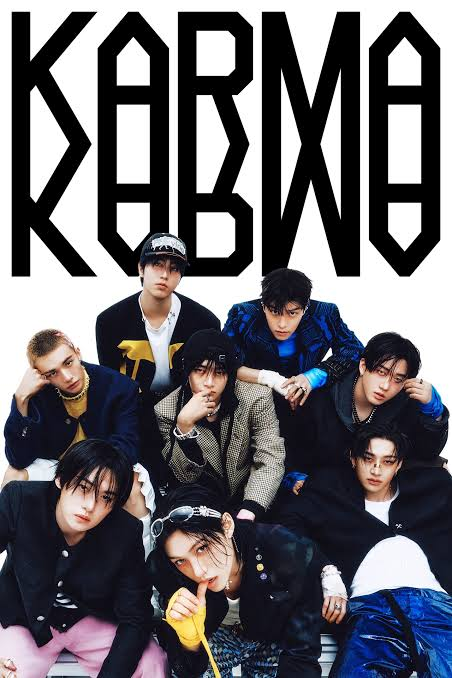
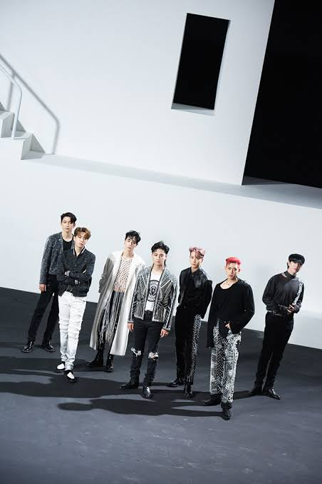
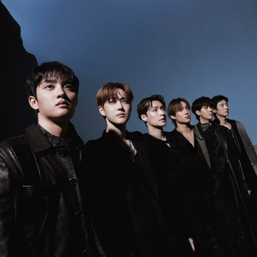
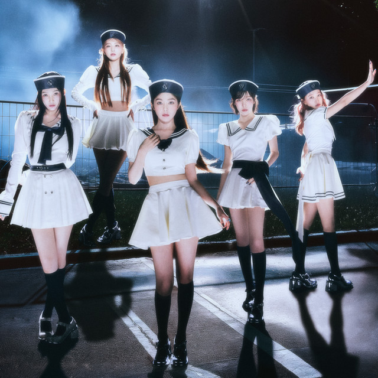

En esta sección de Hallyu-Otaku podrás encontrar información acerca de los comebacks de tus grupos de K-pop favoritos.

EXO a principios de año sorprendió a toda la comunidad con el estreno de "Reverxe", su octavo álbum de estudio completo. La producción estuvo liderada por el tema principal "CROWN", una potente propuesta conceptual que reafirma su estatus musical definitivo dentro de la industria.
Stray Kids impactó las listas musicales a nivel global con el anuncio de su nuevo material discográfico programado para la segunda mitad del año. El lanzamiento expande su exitosa era musical justo en medio de las fechas de su masiva y ambiciosa gira mundial "dominATE".

Red Velvet concretó su esperado regreso a los escenarios musicales tras una pausa de casi dos años sin lanzamientos grupales. Su nuevo proyecto de estudio cautivó por completo a los fanáticos gracias a su característica propuesta visual madura y un sonido sumamente vanguardista.